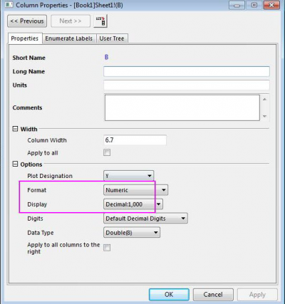
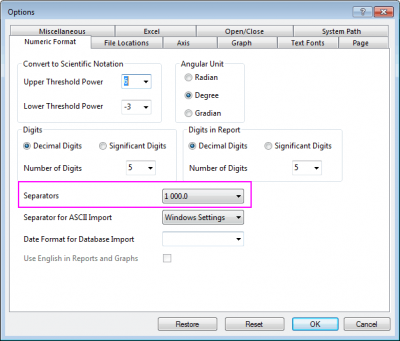

FAQ-989 Wie zeige ich eine Zahl mit 10 000 anstatt mit 10000 an?
Display-thousand-separator-as-space
Letztes Update: 09.01.2019
Um das Trennzeichen für Tausender mit einem Leerzeichen statt eines "," oder eines anderen Zeichens anzuzeigen, zum Beispiel 10000 als "10 000":
- Klicken Sie doppelt auf die Spaltenüberschrift, um den Dialog Spalteneigenschaften zu öffnen. Setzen Sie Format auf Numerisch und Anzeige auf Dezimal: 1,000. Klicken Sie auf OK.
- 
- Wählen Sie im Menü Einstellungen: Optionen. Gehen Sie im geöffneten Dialog zur Registerkarte Zahlenformat. Setzen Sie Trennzeichen auf 1 000.0.
- 
Schlüsselwörter:Trennzeichen, Tausender